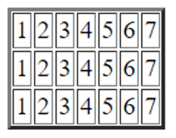
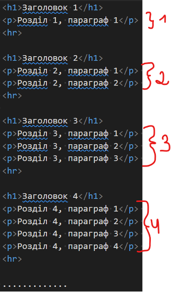

Homework №5 (additional exercises)
Задача -2
Поступово генерувати 100 випадкових чисел від 1 до 1000. Підрахувати яких чисел більше: парних чи непарних.
Задача -1
Вивести на екран номери місяців весни і літа (від 3 до 8).
Задача 0
Вивести на екран 8 кнопок з написом “Hello”.
Задача 1
Вивести з використанням циклів маркований список з випадковими числами (1-100). Кількість випадкових чисел вводиться користувачем. Приклад:

Задача 3
Вивести таблицю з одним рядком і 7 стовпцями.
Задача 4
. Вивести таблицю з 3 рядків і 7 стовпців.
Задача 5
Вивести таблицю.
Задача 7
Вивести на екран N абзаців (N вводиться користувачем) за зразком:
Задача 8
Користувач загадує число. За 3 спроби комп’ютер намагається вгадати число користувача (використати confirm).
Задача 10
Знайти суму всіх непарних чисел, що знаходяться між заданими користувачем числами.
Задача 11
Знайти суму 5 непарних чисел, що знаходяться між заданими користувачем числами.
Задача 13
Морський бій. Комп’ютер випадково розташовує одиночний корабель на полі розміром N*M. Маючи К снарядів користувач намагається потопити корабель.
Задача 15
Користувача поступово вводить показники температури протягом року. Знайти середню температуру.
Задача 16
Користувач поступово вводить прибуток магазину за кожен день протягом N тижнів. Знайти загальну величину прибутку та вивести величину прибутку протягом кожного окремого тижня.